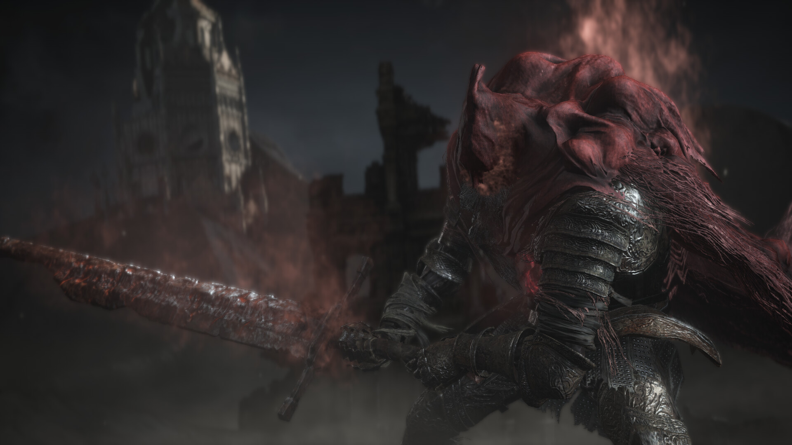

<!DOCTYPE html><html><meta charset="utf-8"><title>Slave Knight Gael</title></html><link rel="stylesheet" type="text/css" href="../themes/styles.css"><div id="post-page"><a id="back-text" href="/posts">← Back</a><h1 class="post-page-title">Slave Knight Gael</h1><span class="post-page-date">2024-04-28</span><p></p>
<p>Gael’s truly the greatest (real) finale that Dark Souls as a franchise could
have asked for.</p>
<p>Not only does he absolutely fucking <em>nail</em> his presentation; The move-set, the
lore, the desolate arena, the roll catches, the weaponry, the phases, the
dialogue, the cutscene, and the score are <strong>all</strong> top-notch. Gael is, in my
opinion, unironically the epitome of FromSoftware boss design and I genuinely
believe nothing they ever do can top him.</p>
<p>He’s certainly not the hardest boss or anything, but to say he’s one of the
things I look forward to the most in Dark Souls III’s endgame would be an
egregious understatement. I think it’s safe to state that nary an expense was
spared for his design.</p>
<p>Gael’s a boss that I (admittedly unknowingly) trivialised for myself my first
couple of runs by virtue of using my favourite weapon, the Hollowslayer
Greatsword, which deals extra damage to him in certain phases - so while I did
always like him, I never really got the opportunity to ‘bond’ with him per se
because I managed to dispatch him fairly quickly.</p>
<p>The sheer grandeur of the arena, the music, and the man himself all consolidated
together, serve as the perfect sendoff for the trilogy. Gael in particular
stands out as one of the greatest in a game already known for having phenomenal
bosses - easily the greatest I’ve encountered personally, across any game I’ve
played, but I digress.</p>
<p>The sheer ferocity, the unhinged aggression, the ‘fuck-you’ attacks what with
the teleport, repeating crossbow (clearly an allusion to Guts from Berserk) all
make for a nail-bitingly tough but satisfying encounter. Despite all his other
flaws, Gael, like most bosses in Dark Souls 3, feels <em>fair.</em></p>
<p>The lore implications with his presence in the Painted World are also great. I’m
a sucker for bosses that have good lore and actual plot relevance and the way
Dark Souls 3 pulled this off so consistently for so many bosses, and Gael
<em>still</em> manages to hold his own.</p>
<p>The fight itself is absolutely anime as fuck. I love how it manages to be flashy
what with the lightning strikes and his cloak’s crimson bellowing but not to the
point where it hampers your experience and/or visibility (like, say Laxasia or
the final boss in Lies of P).</p>
<p>The subtle fake-outs, the clear-cut tells, the leaps, the plunges, the magic,
the roll catches - Gael has quickly rose to become one of my favourite Dark
Souls 3 bosses and I had an absolute blast beating him most recently with the
Dragonslayer Greataxe.</p>
</div><footer><span>© 2025 Mujtaba Asim  |  </span><span>Built w/ <a class="footer-link" href="https://github.com/masroof-maindak/qalam">Qalam.</a></span></footer>